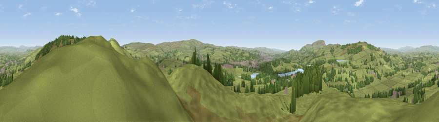

Viewpoint near Foulridge
#10052 in England · top 13% of its area beats it · near FoulridgeWhere it is
The exact computed spot (SD 90125 42725). Click the marker for map links.
The view, rendered

A 360° render of this exact spot computed from the terrain model, tree cover and land cover — summer colours, afternoon light, calibrated against photographs of famous viewpoints. Real trees, hedges and buildings will differ in detail.
The panorama
Grey silhouette: terrain skyline in each direction (720 bearings, Earth curvature and refraction included). Dashed green: skyline with trees (+15 m) and buildings (+8 m) as obstacles. Blue strip: how far the ground is visible on each bearing.
Where the view opens
Wedge length = distance to the farthest visible ground on that bearing (vegetation-aware). Rings at 10, 25 and 50 km.
What fills the view
83% grassland · 12% woodland · 3% built-up · 1% water
Angular shares of the visible panorama (visual magnitude), not map area. Landscape diversity 0.26 (0–1 Shannon).
Key numbers
More beautiful places nearby
The staircase of upgrades: each row has a higher view potential than everything closer. Driving times are estimates from straight-line distance, calibrated against real road routing — check an actual route before setting out.
| Place | Direction | Drive | Score |
|---|---|---|---|
| Viewpoint near Laneshaw Bridge | E · 3 km | ~6 min | 63.5 |
| Viewpoint near Earby | NE · 4 km | ~8 min | 64.9 |
| Weets Hill | WNW · 5 km | ~11 min | 69.3 |
| Viewpoint near Lothersdale | NE · 6 km | ~13 min | 70.5 |
| Lad Law (Boulsworth Hill) | SSE · 8 km | ~16 min | 71.5 |
| Viewpoint near Barley | W · 10 km | ~19 min | 76.3 |
| Pendle Hill | W · 10 km | ~19 min | 76.5 |
| Viewpoint near Edenfield | SSW · 25 km | ~41 min | 77.5 |
53.88062, -2.15170 · source: screening · position refined by local search. Computed location — check access rights before visiting.